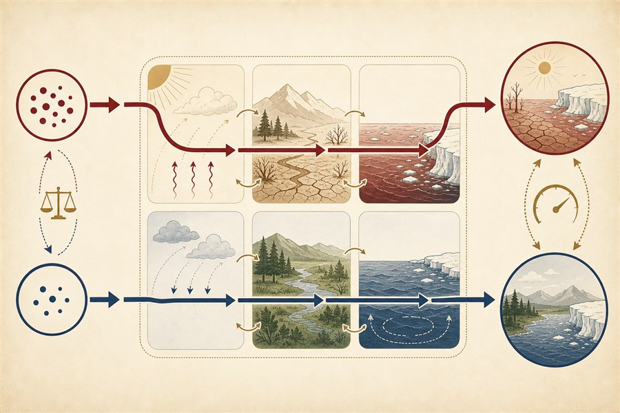
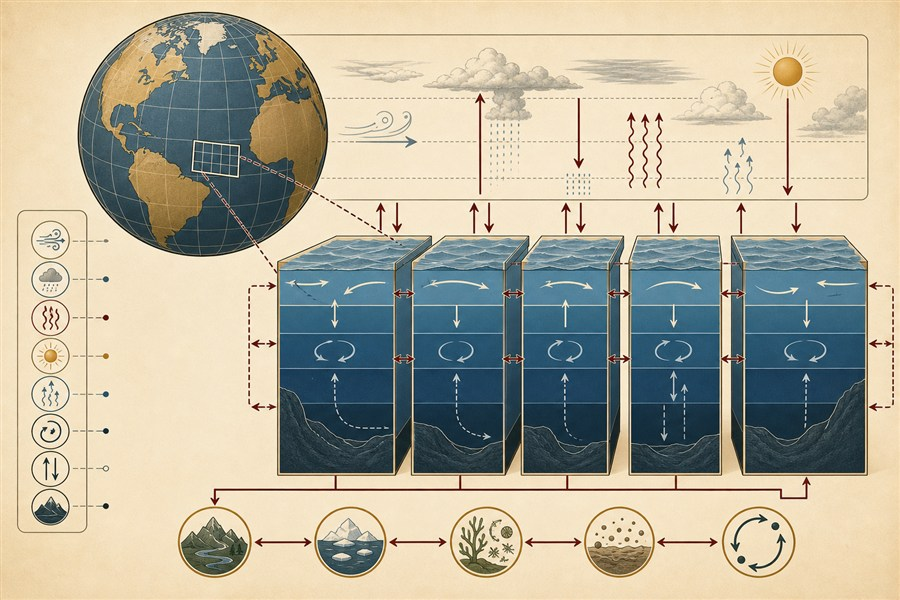
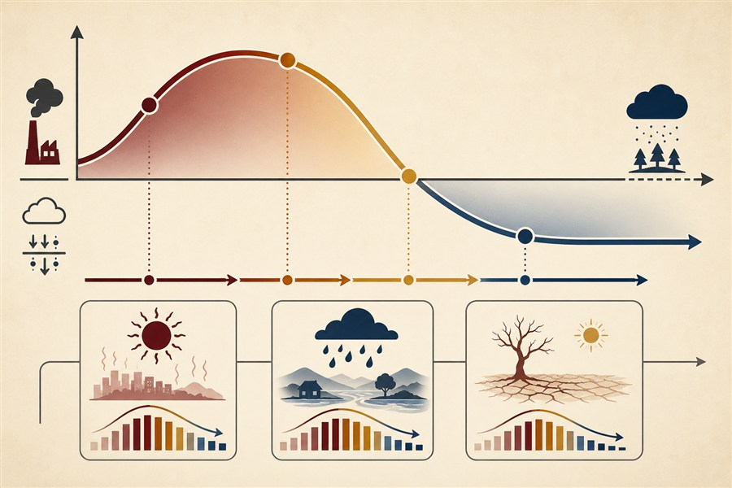

How the ocean, land, and atmosphere respond asymmetrically to rising versus falling CO₂ concentrations.

Development of the Multi-Column Ocean Model (MCOM) within the CESM2 framework.

Climate change projection and extreme event risk under net-zero and negative emission scenarios.

Thesis: "Irreversible surface temperature change via the delayed North Atlantic and Southern Ocean response to a carbon dioxide removal scenario." Advisor: Soon-Il An
Thesis: "Mechanisms of heat waves over the Korean peninsula, and their projection in the 21st century." Advisor: Soon-Il An
Climate system responses to net-zero and net-negative carbon emissions scenarios.
Developed and integrated the Multi-Column Ocean Model (MCOM) within the CESM2 framework.
Investigated extreme precipitation under net-zero / negative emission scenarios.
CESM (v1 & v2), MCOM
NCL, Fortran, Python